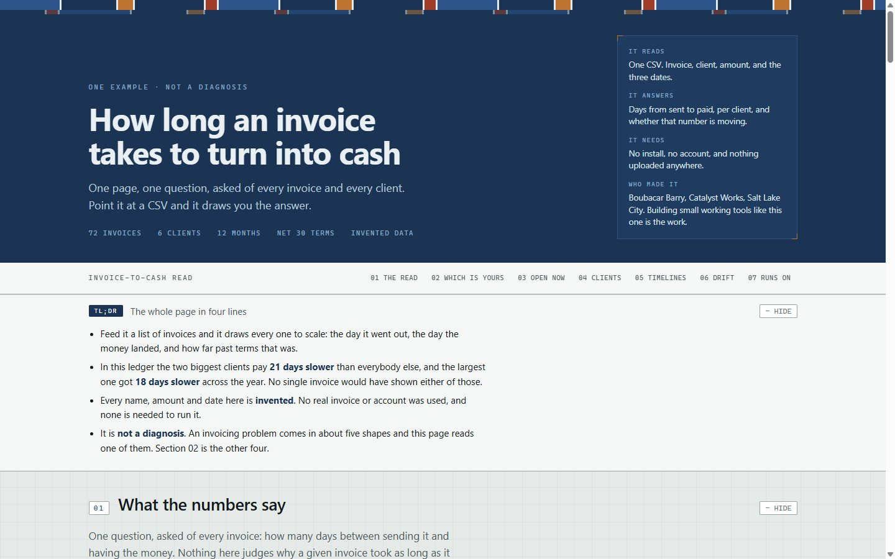
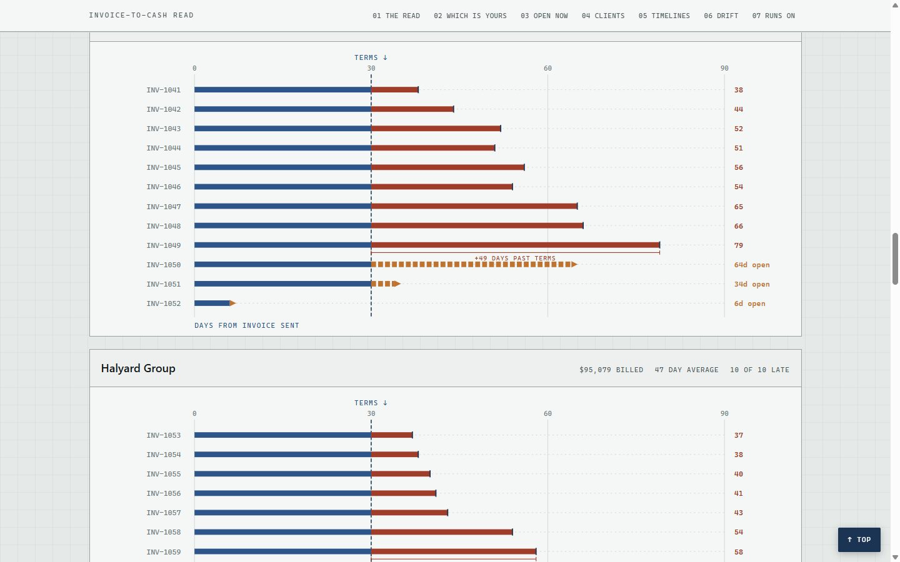
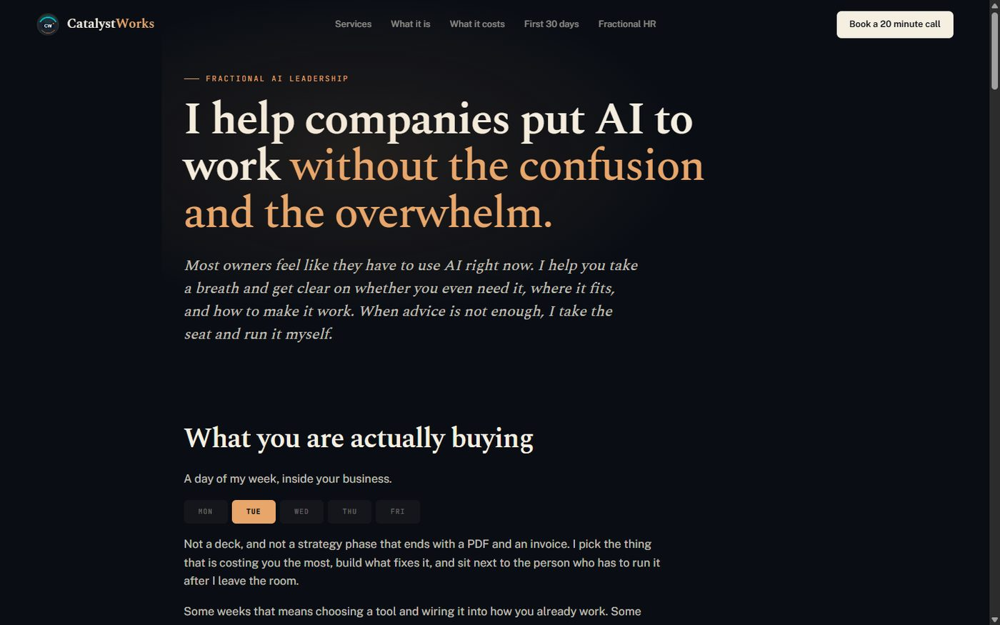
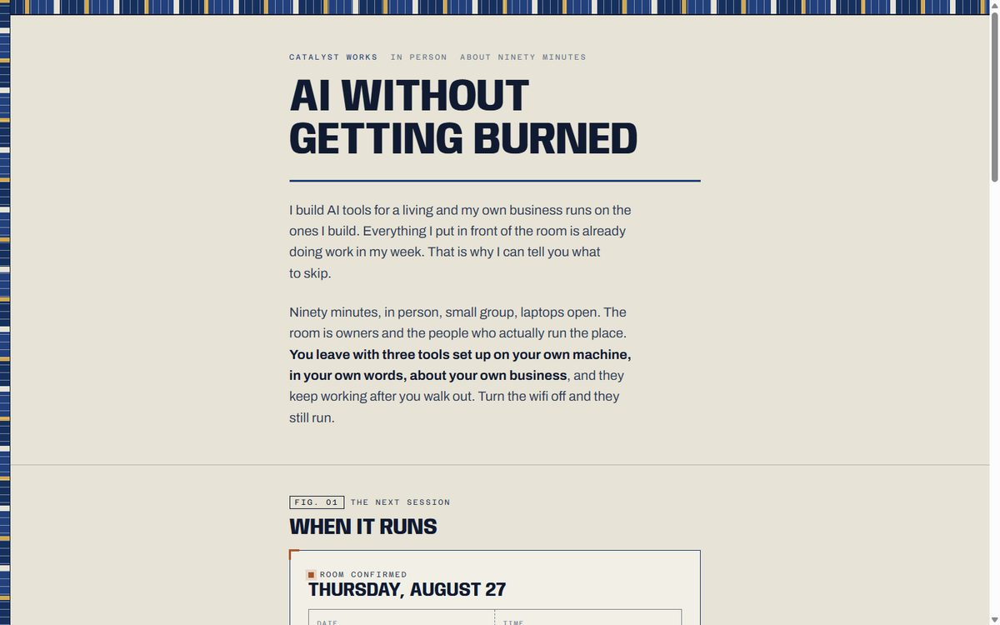
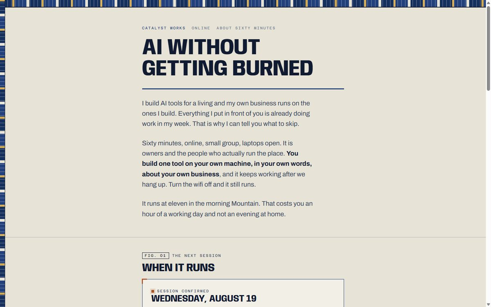
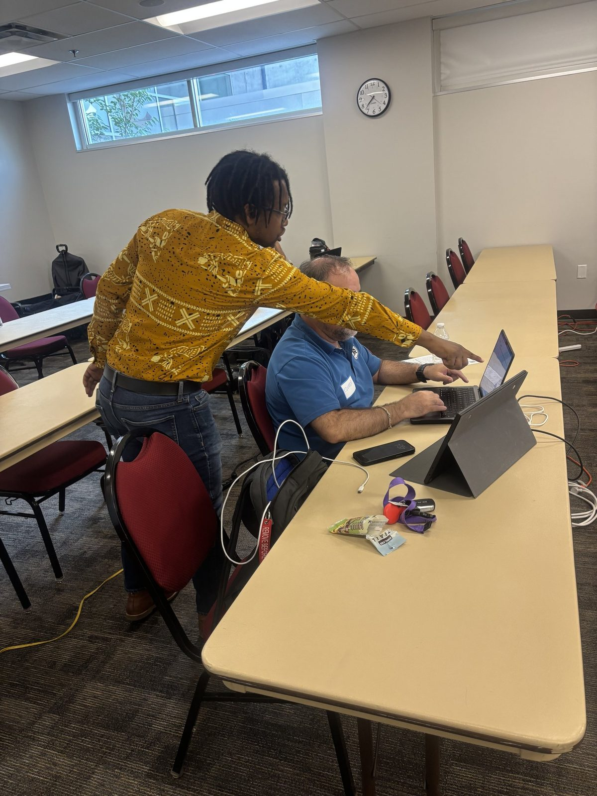
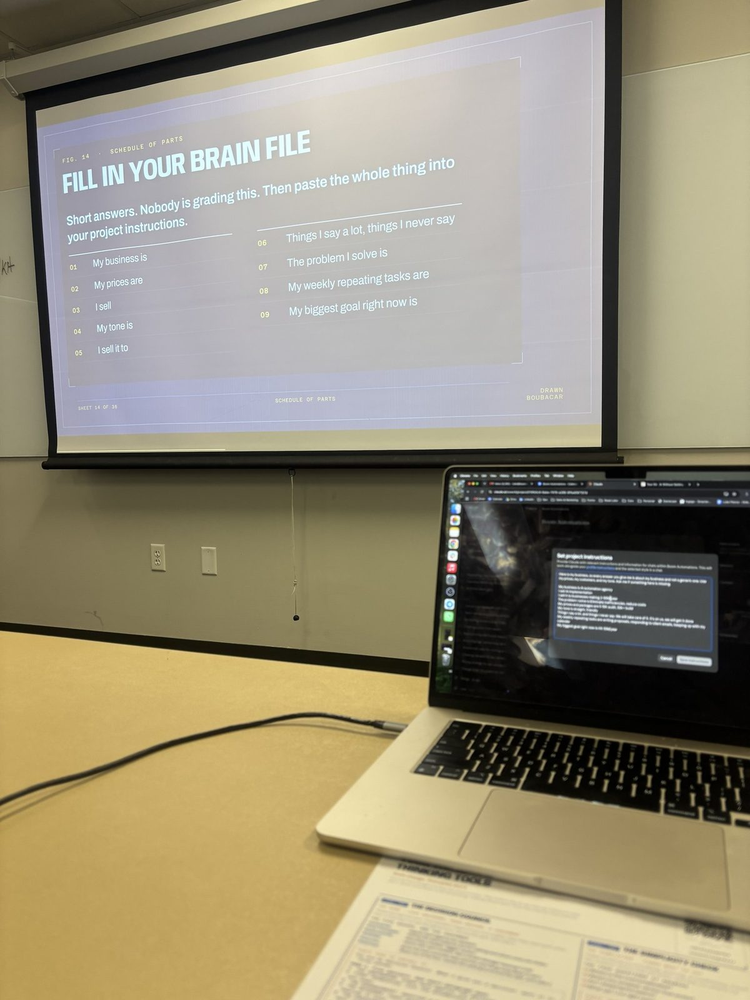

00
The short version
- I teach business owners and teams to use AI on their own work, in the room, on their own machines. They leave with tools that keep working.
- I also build the tools. There are real ones further down this page that you can open and click through right now.
- I ran this session in person at Salt Lake Community College on July 30. The photos are from that night.
- Two more are on the calendar, one online and one in person.
- What I am exploring with the SBDC is running something like this for your clients on a schedule rather than once. I have no fixed view on the shape of it.
Scroll for the work. Nothing here needs a decision today.
01
What I do, in one breath
I sit down with a business, find the thing that is actually costing them time, and build what fixes it. Sometimes that is AI. Often it is just plain automation. Then I sit next to the person who has to run it after I leave the room.
When a room is what is needed instead, I teach. Same principle. I am not up there running slides. People are working on their own laptops on their own business, and I am walking the room.
You run the business. I run the systems with you.
Who is teaching
I build AI tools for a living, and my own business runs on the ones I build. Everything I put in front of a room is already doing work in my week. That is why I can tell people what to skip.
Before this I spent about fifteen years working in HR inside large companies. That is where I watched how people take up something new, and how they quietly avoid it without ever saying no. That part is most of what a session is really about. The technology is the easy half.
Most owners are shopping for AI when they should be installing it. Shopping is browsing. Installing is building.
02
What I build, so you can see how I work
These are all live. Open any of them. I would rather show you the work than describe it.
A tool that answers one question about a business
An owner asks me how long it takes to get paid. Most accounting software answers with an average, and an average hides the client who is quietly dragging everything. So I built the page that draws it instead.

One page, one question, asked of every invoice. It says up front that the data is invented and that it is not a diagnosis. I would rather be believed than impressive.

Every invoice drawn to scale. The dashed line is the terms. The moment you see it this way, the client who takes an extra three weeks stops being invisible.
Open the tool and click through it yourself.
I do not walk in with a hammer looking for a nail. I bring the whole toolbox, and the right question tells me which one to pull out.
The work I take on when advice is not enough

One day of my week, inside the business. Not a strategy phase that ends in a PDF.
Some companies do not need a class. They need somebody to take the seat and run it for a while. I do that too, one day a week, and the whole design of it is that it ends. I am not trying to become a dependency. I am trying to leave a team that can do it without me.
I mention it here only because it is the same method as the teaching. Find the constraint. Build the thing. Hand it over properly.
The sessions themselves

Thursday, August 27. Ninety minutes, three tools, SLCC Miller Campus.

Wednesday, August 19. Sixty minutes on video, one tool, built properly.
catalystworks.consulting/workshop · catalystworks.consulting/online
03
What the room actually looks like
Thursday, July 30. Salt Lake Community College, Miller Campus in Sandy. Doors at 6:30, session 7:00 to 8:30, hard stop. Beginner level, no technical background assumed, laptops open the whole way through.

This is where the session actually happens. Not at the front of the room.

The slide gives the instruction. The laptop does the work. If people are looking at my screen for long, I have got the balance wrong.
This is a working workshop. Nobody leaves with notes. They leave with things that run.
What everybody built that night
One free account, one project, three tools inside it. Not three subscriptions. One place, three tools, all theirs to keep, and every one of them written in plain language so it moves to whatever AI they use next year.
- A business brain. Their business on one page. What they sell, who buys it, what they charge, how they talk. Written once, reused every time after.
- A decision council. Five advisors argue a real decision from five directions, then give one verdict. Proceed, change, or kill. People ran it on something they were facing that week.
- A simplicity check. Paste in the thing you are overthinking. It comes back with the simplest version that still works.
The ninety minutes, block by block
- 7:00What tonight isThe plan, and what they walk out with.
- 7:05Plain EnglishWhat these tools do, and the one trap that burns owners. The trap is getting locked in.
- 7:13Account and projectHeads down. Everyone builds from here on.
- 7:19Build the business brainTheir own words, on the night.
- 7:28Build the decision councilThe block I will never cut. Everyone types a real decision and presses enter at the same moment.
- 7:48A real business, liveOn the screen, start to finish, so they see it work at full size.
- 7:54Build the simplicity checkHeads down again.
- 8:03Make it follow themTurning what they built into something that loads in everything they open afterwards.
- 8:20Where to start on MondayFour minutes of silent writing. They leave with one thing to do.
Nothing got cut. The clock held. Questions came throughout instead of being saved for the end, and everybody stayed after to talk. One person wrote to me unprompted the next morning asking for a longer version.
The clearest piece of feedback I got was a criticism, and it was right. I never told the room why they should listen to me before I started teaching. That is fixed in the next one.
04
Why I teach it this way
Most AI sessions are a demonstration. Someone shows a screen, the room nods, everybody goes home with notes and nothing running. I wanted the opposite, and there are four things I hold to.
I am not teaching people how to use AI. I am showing them the framework for approaching a problem.
A tool is one and done. The tool you learned tonight changes next quarter. The way you approach the problem does not. So I teach the approach, and the tool is just where we practise it.
Not everybody needs to be a power user
AI is a bit like Excel. Everybody has it. Not everybody uses it. Almost nobody needs to be a power user of it, and pretending otherwise is why so much AI training quietly fails. I am not trying to turn a room into experts. I am trying to give each person the two or three things that take real hours off their week.
I do not measure this by how many power users I made. I measure it by how much time I gave people back.
Nobody gets locked in
One of the things I teach is how to not get locked into anybody's product, including mine. Everything people build is written in plain language and moves to whatever they pick up later. I say this out loud in the room because it is the trap I watch owners fall into most.
AI is a tool, not a savior and not a devil
Most people talking about this are selling either utopia or doomsday. Both are self serving. It is a tool. A very good one. Humans still have to direct it and take responsibility for it, and I would rather say that plainly than oversell a room.
Everyone leaves with one thing to do
There is an old story about turkeys who went to training on how to fly and soar, and then walked home. I do not want turkeys. So the last block of every session is silent writing, and everyone leaves with one specific thing they are going to do, and I ask them to tell me how it went.
It is not a skills gap. It is a permission gap. Most people just have not seen somebody like them do it.
05
Where an institution fits in this
This section is written for the Salt Lake SBDC, because that is the conversation I am in this week. It would read the same for a university, a chamber, or a company bringing this to its own people.
The honest part first
Filling a room from a standing start is the hardest part of this work by a wide margin. I run a page and a checkout per session, paid social pointed at it, my own list and posts, local listings, and people I know here. All of that puts people in a room.
The single best piece of distribution I have ever had for one of these came from the SBDC at Salt Lake Community College, which put the July 30 session in your newsletter. Nobody asked you to do that. It reached people I had no way of reaching.
Ads put people in a room. An institution people already trust puts the right people in it.
What you would be taking on
You have had AI speakers before, so the useful question is not whether I know the subject. It is what the risk looks like on your side.
- It exists and it has run. This is not a proposal. There is a deck, a run of show timed to the minute, and a room that already happened on your campus.
- It is vendor neutral by design. Teaching people not to get locked in is part of the content. A public institution cannot be seen endorsing a product, and this does not ask you to.
- Teaching, not selling. On July 30 I closed by offering a free one to one session to anyone who wanted to keep going. That was the whole of it. If a session run with you means no offer at all, tell me and I will cut it.
- I carry the logistics. Room, printing, check in, insurance, reminders, follow up. I did all of it in July. Your lift would be distribution, not production.
- It repeats. Same structure every time, so a second session is not a second gamble.
- It stretches. Someone asked me unprompted for a day long version. I have not built one. If a longer format is closer to how your trainings run, I would rather build toward that than fit you into ninety minutes because ninety minutes is what I happen to have.
What I would like to explore
Running something like this for your clients on a schedule rather than once. I deliberately do not have a view on the shape. Monthly, quarterly, once per cohort, your room or online, standalone or slotted inside something you already run. You know your calendar and your clients. I would rather build the format around that than arrive with one.
The content is not fixed either. Ninety minutes and three tools is what I happened to build for a room I was filling myself. Different length, different starting point, aimed at one trade rather than all of them, all of that is open.
On cost, since the sessions above carry a price. Those are what I charge when I am the one filling the room. Run with a partner it is a different question, and I would sooner follow what your program already does than ask you to bend it around me.
06
What I want to ask you
This is the part I am actually looking forward to, and it is the reason this page is a walk through rather than a pitch. I have not made assumptions about how your program runs. I would rather hear it than guess.
- How has the SBDC run its AI sessions before, and what worked in them?
- What do your advisors hear from clients about AI most often? What are people actually confused about, as opposed to what the internet says they are?
- What format and length fits your calendar and your rooms?
- What do you need from a guest speaker before you would say yes to one?
Whatever happens with scheduling, the answers to those shape how I build the next session either way.
If you are reading this without me
Then the short version is this. I teach people to use AI on their own work, in the room, and they leave with it running. I build the tools too, and the ones on this page are live if you want to click them.
If you think this belongs in front of your people, write to me and say so. I will come back with a shape, not a proposal document.
boubacar@catalystworks.consulting
801-888-1963